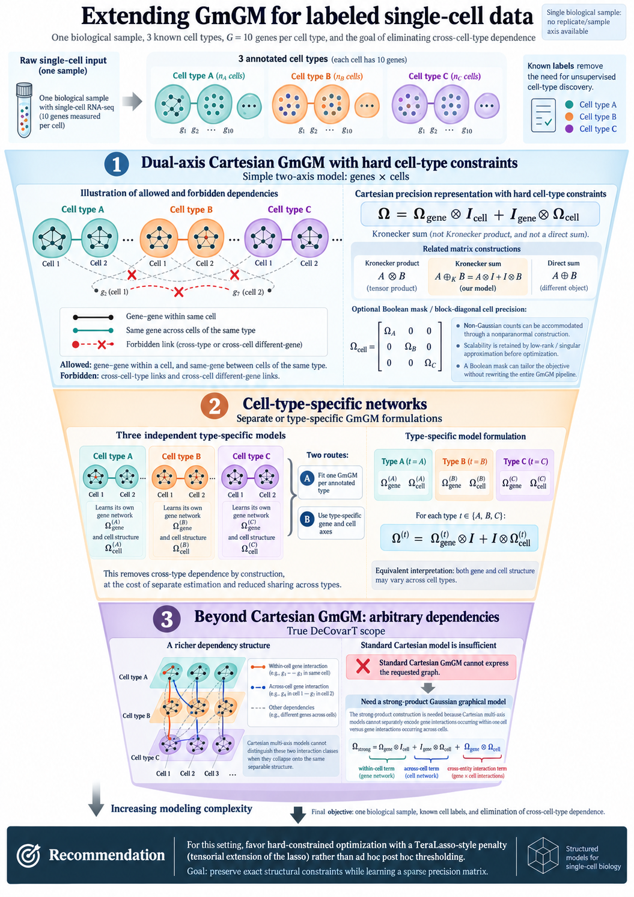

%%{init: {"theme": "sandstone"}}%%
flowchart TD
A["UMI counts, labels j, time t"] --> B["Gene panel G_0"]
B --> H["huge graphical lasso"]
B --> N["Nonparanormal scores"]
N --> S["SILGGM, global FDR"]
B --> P["PLNnetwork on counts"]
H --> F["Sparse Theta_j,t"]
S --> F
P --> F
F --> D["DeCovarT population Gaussian"]
4 Undirected GGMs from single-cell transcriptomics
DeCovarT needs one sparse Gaussian graphical model per cell type at the population (pseudo-bulk) level, not a per-cell precision and not a directed regulatory DAG. The estimand, aligned with the article, is
\boldsymbol{x}_{\cdot j} \sim \mathcal{N}_{G}\bigl(\boldsymbol{\mu}_{\cdot j},\,\boldsymbol{\Sigma}_{j}\bigr), \qquad \boldsymbol{\Theta}_{j} \equiv \boldsymbol{\Sigma}_{j}^{-1} \ \text{sparse}, \tag{4.1}
with undirected edges encoding conditional dependence (Friedman et al. 2008; Mazumder and Hastie 2011). Single-cell UMI profiles are the only observations.
They are not the objects that enter the deconvolution likelihood: we use them to estimate (\boldsymbol{\mu}_{\cdot j},\boldsymbol{\Theta}_{j}) for labelled types in the Suppinger murine gastruloid resource (Suppinger et al. 2023). Downstream, those parameters discriminate types via mean shifts and precision rewiring, then enter the convolution
\boldsymbol{y}_{\cdot i} \mid (\boldsymbol{\zeta},\boldsymbol{p}_{\cdot i}) \sim \mathcal{N}_{G}\!\bigl( \boldsymbol{\mu}\,\boldsymbol{p}_{\cdot i},\, \textstyle\sum_{j}p_{ji}^{2}\boldsymbol{\Sigma}_{j} \bigr). \tag{4.2}
4.1 Scope of the core pipeline
In scope: undirected sparse precisions; single-cell transcriptomics only; stationarity; labelled cell types. The three estimators in Figure 1 are huge (graphical lasso), SILGGM after a nonparanormal map with global FDR, and PLNnetwork.
Dataset constraint. GSE229513 is a 10x Chromium 3′ v3 UMI resource with one technical scRNA-seq experiment, not independent biological replicates for GRNs (Suppinger et al. 2023). GSE250136 is a later stem-embryo dataset; it is external validation, not extra Suppinger replicates. Technical bootstrap of cells is allowed (Section 5.3); biological bootstrap is not. Networks are fit independently at 48 h, 72 h and 96 h (Section 2.1).
4.2 How each estimator sees the counts
A transformation belongs to one estimator. It is not crossed with the other two.
| Estimator | What is passed in | Object exported |
|---|---|---|
huge |
Continuous Gaussian table | Sparse \boldsymbol{\Theta}_{j} |
SILGGM |
Nonparanormal scores, then global FDR | Support, then an SPD refit |
PLNnetwork |
Raw UMI counts and a library-size offset | Latent Gaussian precision |
SCTransform Pearson residuals stay in the HVG ranking of Section 3.2. Do not pass them to PLNnetwork: the PLN already has a Poisson sampling layer. Do not run the nonparanormal map before huge or before PLN; it is part of the SILGGM branch only.
Warning 4.1: :warning: Nonparanormal maps are not affine, so they break moments
huge::huge.npn() replaces each margin by a (truncated or shrunk) inverse-normal score (Liu et al. 2009). That map \varphi is monotone but not affine. Jensen’s inequality then says \varphi(\mathbb{E}[y_{g}])\neq\mathbb{E}[\varphi(y_{g})] unless the margin is degenerate (Note 4.2). A precision fitted after NPN therefore targets a different random vector from the population Gaussian DeCovarT convolves. Use NPN only inside the SILGGM branch, and never export NPN-scale means as \boldsymbol{\mu}_{\cdot j}.
Important 4.2: :warning: Transforming the response is usually the wrong GLM
DeCovarT’s mean map \boldsymbol{y}=\boldsymbol{\mu}\boldsymbol{p} is additive on the measurement scale of \boldsymbol{y}. Replacing \boldsymbol{y} by \varphi(\boldsymbol{y}) and then treating the transform as Gaussian does three separate kinds of damage.
1. Jensen: moments of \varphi(\boldsymbol{y}) are not \varphi of the moments. For a convex \varphi, the probabilistic form of Jensen’s inequality states \varphi(\mathbb{E}[\boldsymbol{y}])\le\mathbb{E}[\varphi(\boldsymbol{y})], with equality iff \boldsymbol{y} is almost surely constant or \varphi is affine (Wikipedia, probabilistic form). The logarithm is concave, so
\mathbb{E}[\log y_{g}] \le \log\mathbb{E}[y_{g}], \tag{4.3}
and \log1p is likewise concave on [0,\infty). A graphical lasso fitted to \log1p counts therefore targets a precision of a different random vector. The mean of the transformed table is not the transform of the mean that DeCovarT needs in Equation 4.2. Population aggregation (Section 5.2) compounds the error: the sum of transformed cells is not the transform of the sum.
2. The estimand of a transformed linear model is not the estimand of the original mean. In a Gaussian linear model, \mathbb{E}[\log y\mid x]=\beta_{0}+\beta_{1}x describes multiplicative effects on y after exponentiation, not additive shifts of \mathbb{E}[y\mid x] (University of Virginia Library, interpreting log transformations). DeCovarT’s target is a linear mixture of means plus a quadratic mixture of covariances.
3. A GLM with the right mean–variance function is preferable to transforming y. Transforming the response to force Gaussianity changes the parameter. The constructive alternative on counts is the Poisson-lognormal model (Section 4.3.3), not log1p followed by graphical lasso.
4.3 Three sparse-precision estimators
4.3.1 Graphical lasso in huge
huge is the maintained implementation of the graphical lasso of Friedman, Hastie and Tibshirani (Friedman et al. 2008; Mazumder and Hastie 2011; Zhao et al. 2012, 2022): a regularisation path, EBIC or StARS selection, and sparse-matrix output. The programme is the Friedman graphical lasso.
Generative model
Cells of one labelled type, at one time, are treated as independent Gaussian replicates. The precision is sparse.
%%{init: {"theme": "sandstone", "flowchart": {"curve": "basis"}}}%%
flowchart TB
subgraph plateC["c = 1, ..., n_j"]
direction TB
mu["mu_j"] --> x(("x_c"))
Sig["Sigma_j"] --> x
end
Th["Theta_j = Sigma_j inverse, sparse"] --> Sig
classDef param fill:#ffffff,stroke:#0f172a,stroke-width:1.5px
classDef latent fill:#ffffff,stroke:#0f172a,stroke-width:1.5px
class mu,Sig,Th param
class x latent
Objective and assumptions
Let S be the sample covariance of the n cells on the gene panel. The estimator is
\widehat{\boldsymbol{\Theta}} = \arg\min_{\boldsymbol{\Theta}\succ 0} \Bigl[ -\log\det\boldsymbol{\Theta} + \operatorname{tr}(S\boldsymbol{\Theta}) + \lambda\|\boldsymbol{\Theta}\|_{1} \Bigr]. \tag{4.4}
Assumptions: multivariate Gaussian observations; conditional independence encoded by zeros of \boldsymbol{\Theta}; cells independent within the type-time subset; G may exceed n.
Optimisation and the \ell_{1} penalty
huge(method = "glasso") solves Equation 4.4 by graphical-lasso coordinate descent. The \ell_{1} term drives off-diagonal entries to zero. The diagonal is left unpenalised, so variances are not shrunk toward zero. A path of \lambda values is computed; one \lambda is then chosen.
Hyperparameters
- \lambda path, and the selection rule in
huge.select()(ebic(Foygel and Drton 2010) orstars); - whether the diagonal is penalised (default in this design: no);
- the gene panel \mathcal{G}_{0} and the type-time subset.
4.3.2 SILGGM after a nonparanormal map
SILGGM tests entries of a Gaussian precision and controls FDR on the whole graph (Zhang et al. 2018a, 2018b). The arm used here is: nonparanormal scores, then de-sparsified graphical lasso (D-S_GL) with global = TRUE. With many cells the five SILGGM procedures tend to agree; at a bulk-sample size they need not. The export we keep is the FDR-selected edge list (Cytoscape CSV via cytoscape_format and csv_save), not the full inferential dump.
Note 4.3: :information_source: Nonparanormal scores
Liu, Lafferty and Wasserman (Liu et al. 2009) define a nonparanormal vector by strictly increasing maps f_{g} such that Z_{g}=f_{g}(X_{g}) is multivariate Gaussian with mean zero, covariance R, and precision R^{-1}. If each f_{g} is unknown but monotone,
Z_{g} = \Phi^{-1}\bigl(F_{g}(X_{g})\bigr),
because F_{g}(X_{g}) is uniform and \Phi^{-1} returns a standard normal margin. Replacing F_{g} by a winsorised or shrunken empirical cdf is huge.npn() with npn.func = "truncation" or "shrinkage". Graphical lasso on those scores estimates the precision of Z, not of the raw counts. Both modes return an n\times G score matrix that SILGGM can take. Shrinkage is the default; truncation is the heavy-tail alternative. Means on this scale are not \boldsymbol{\mu}_{\cdot j} (Note 4.1).
Generative model
Observed margins are monotone images of one latent Gaussian vector. The precision that SILGGM tests is the precision of that latent vector, not of the counts.
%%{init: {"theme": "sandstone", "flowchart": {"curve": "basis"}}}%%
flowchart TB
subgraph plateC["c = 1, ..., n_j"]
direction TB
R["Correlation R"] --> Z(("Z_c"))
Z --> f["Monotone f_g"]
f --> X(["X_c"])
end
Th["Precision of Z, sparse"] --> R
classDef param fill:#ffffff,stroke:#0f172a,stroke-width:1.5px
classDef latent fill:#ffffff,stroke:#0f172a,stroke-width:1.5px
classDef obs fill:#cbd5e1,stroke:#0f172a,stroke-width:1.5px
class R,Th,f param
class Z latent
class X obs
Objective and the de-sparsified correction
The first step is still Equation 4.4, which is \ell_{1}-biased. The Janková–van de Geer correction (Jankova and Geer 2015) is not 2\widehat{\boldsymbol{\Theta}}-S. On the correlation scale it is
\widehat{T} = 2\widehat{\boldsymbol{\Theta}} - \widehat{\boldsymbol{\Theta}}\, \widehat{R}\, \widehat{\boldsymbol{\Theta}}, \tag{4.5}
with \widehat{R} the empirical correlation. \widehat{T} recentres the edges so that they are asymptotically normal under a sparsity condition on the maximum degree. It is deliberately dense: it is an inferential object, not a generative precision. Zhang and Zou (Zhang and Zou 2014) note that graphical lasso remains useful for support recovery even when the Gaussian assumption fails. That supports edge screening, not export of \widehat{T} itself as \boldsymbol{\Theta}_{j}.
Optimisation and global FDR
%%{init: {"theme": "sandstone"}}%%
flowchart LR
X["Counts"] --> N["Nonparanormal scores"]
N --> Gl["Graphical lasso"]
Gl --> T["Debiased T"]
T --> FDR["Global FDR support"]
FDR --> SPD["SPD refit"]
SILGGM runs a lasso-type fit, builds the debiased statistics, and, with global = TRUE, thresholds them by the global FDR rule for Gaussian graphical models (Liu 2013; Zhang et al. 2018a). The selected zeros define a support. An SPD precision is then refit on that support (graphical lasso constrained to the support, or a small ridge if the constrained MLE is unavailable). Edge testing and the DeCovarT precision stay separate (Equation 4.1).
Hyperparameters
npn.func:shrinkageortruncation;method = "D-S_GL"andglobal = TRUE;- FDR level
alpha; lambdaif it is not left at the package default;cytoscape_format = TRUEandcsv_save = TRUEonly as the edge-list export.
4.3.3 Poisson-lognormal network
PLNnetwork is the sparse-precision member of PLNmodels (Chiquet et al. 2021, 2018, 2025). Fused PLN graphical lasso is a perspective (Section 4.6), not this arm.
Generative model
For each cell c in one type-time subset, with library size S_{c},
Y_{cg}\mid\boldsymbol{Z}_{c} \sim \mathrm{Poisson}(S_{c}Z_{cg}), \qquad \log\boldsymbol{Z}_{c} \sim \mathcal{N}_{G}(\boldsymbol{\mu},\boldsymbol{\Sigma}), \quad \boldsymbol{\Theta}=\boldsymbol{\Sigma}^{-1}. \tag{4.6}
Zeros are Poisson sampling zeros (Svensson 2020). The fit is independent for each labelled type at each of 48 h, 72 h and 96 h. A single formula with cell-type and time dummies would estimate one shared precision and only shift the mean; that is not the DeCovarT target. The formula interface is used inside each subset, with an offset and no further design.
%%{init: {"theme": "sandstone", "flowchart": {"curve": "basis"}}}%%
flowchart TB
subgraph plateC["c in one type-time subset"]
direction TB
S["offset log S_c"] --> Y(["Y_c"])
Z(("log Z_c")) --> Y
mu["mu"] --> Z
Sig["Sigma"] --> Z
end
Th["Theta = Sigma inverse, sparse"] --> Sig
classDef param fill:#ffffff,stroke:#0f172a,stroke-width:1.5px
classDef latent fill:#ffffff,stroke:#0f172a,stroke-width:1.5px
classDef obs fill:#cbd5e1,stroke:#0f172a,stroke-width:1.5px
class mu,Sig,Th,S param
class Z latent
class Y obs
Objective and assumptions
The observed-data likelihood integrates the latent Gaussian. That integral is intractable. Variational inference replaces the posterior of \boldsymbol{Z} by a tractable q and maximises the evidence lower bound, which is the expected complete log-likelihood minus \mathrm{KL}(q\,\|\,p(Z\mid Y)). An \ell_{1} penalty is added on off-diagonal entries of \boldsymbol{\Theta}.
Important 4.4: :information_source: Variational EM, KL, and why not Monte Carlo
EM alternates an expectation under the true conditional p(Z\mid Y) with a maximisation of the expected complete log-likelihood. When that conditional is unavailable, variational EM restricts the expectation to a family q. The identity
\log p(Y) = \mathrm{ELBO}(q) + \mathrm{KL}\bigl(q\,\|\,p(Z\mid Y)\bigr)
shows that maximising the ELBO is the same as minimising the Kullback–Leibler divergence from q to the true posterior. Equality holds when q=p(Z\mid Y), which is ordinary EM. A Monte Carlo E-step would draw the latent Gaussian at every iteration. The variational step replaces those draws by a closed-form update of q, which is why the same sparse PLN is practical at single-cell n (Chiquet et al. 2018).
Optimisation and the \ell_{1} penalty
PLNnetwork() runs that variational scheme over a grid of penalties (PLNnetwork). penalize_diagonal stays FALSE in control_main, matching the graphical-lasso convention. The penalty grid is set by penalties, or by nPenalties and min.ratio in control_init.
Hyperparameters
Inside each type-time subset the call is of the form abundance ~ 1 + offset(log_library), with log_library the natural log of that cell’s library size. Play with:
- the penalty grid (
penalties, ornPenaltiesandmin.ratio); penalize_diagonal(kept false);- outer-loop tolerances
ftol_outandmaxit_outonly if a subset fails to converge.
Zero-inflated PLN is not the default (Note 4.5).
4.4 Conclusion: twelve routes
The product in Figure 1 is
\underbrace{\{\texttt{huge},\ \texttt{SILGGM+NPN},\ \texttt{PLNnetwork}\}}_{\text{three precisions}} \times \underbrace{\{\text{affine},\ \text{scDesign2}\}}_{\text{two lifts}} \times \underbrace{\{\mathcal{G}_{0},\ \text{optional NSGA-II}\}}_{\text{two panels}}. \tag{4.7}
Every core method must finally export
\bigl\{ \widehat{\boldsymbol{\mu}}_{\cdot j},\, \widehat{\boldsymbol{\Sigma}}_{j},\, \widehat{\boldsymbol{\Theta}}_{j} \bigr\}_{j=1}^{J}, \qquad \widehat{\boldsymbol{\Theta}}_{j} = \widehat{\boldsymbol{\Sigma}}_{j}^{-1} \succ 0, \tag{4.8}
on the linear scale of Equation 4.2, not on NPN scores.
| Estimator | Reference | What it estimates | Pros | Cons |
|---|---|---|---|---|
huge |
Friedman et al. (2008); Zhao et al. (2012) | Sparse Gaussian \boldsymbol{\Theta} | Fast path; EBIC / StARS; maintained | Needs Gaussian rows; no library-size layer |
SILGGM D-S_GL |
Zhang et al. (2018a); Liu (2013) | Debiased edges, then an FDR support | Global FDR; large n makes modes agree | Debiased \widehat{T} is dense; NPN changes the mean |
PLNnetwork |
Chiquet et al. (2021) | Latent precision of a PLN | Counts and offset; variational, not MCMC | Heavier than graphical lasso; no edgewise FDR |
The knobs that the penalty figures in Section 4.5 are meant to set are \lambda (huge), alpha (SILGGM), and the PLN penalty grid.
Warning 4.5: :warning: Why we drop zero-inflated directed graphs in the core
Directed zero-inflated DAGs are the wrong object for DeCovarT: the output is a DAG, not an undirected SPD precision. Suppinger is droplet UMI data. Svensson showed that zeros in droplet scRNA-seq are often explained by ordinary molecule-sampling counts (Svensson 2020). Keep hurdle or ZINB graphs in Section 10.1 if the observation model is to be contaminated, not as a GRN estimator.
4.5 Choosing the penalty
Four displays, and only these, are used to pick the penalty for each of the three estimators. Partial-correlation weights matter, so heatmaps show the precision, not a binary adjacency.
- Regularisation paths. Plot each off-diagonal entry of \widehat{\boldsymbol{\Theta}}(\lambda) against \lambda or \log\lambda. This is the classical lasso path: which edges enter as the penalty relaxes.
- EBIC against \lambda. Plot \mathrm{EBIC}_{\gamma}(\lambda) against \log\lambda, with a line at the minimiser (Foygel and Drton 2010). Overlay \gamma\in\{0,0.25,0.5\} when that hyperparameter is free. A flat valley means many penalties are equivalent.
- Precision heatmaps along the path. At a few \lambda values, including the selected one, show
\rho_{gg'\mid\mathrm{rest}} = -\frac{\theta_{gg'}}{\sqrt{\theta_{gg}\theta_{g'g'}}}. \tag{4.9}
Freeze the gene order (cluster once). Blocks that survive a stronger penalty are the stable ones. 4. Edge-count against EBIC. Put the number of edges on the horizontal axis and EBIC on the vertical axis, and mark the optimum. That is the sparsity–fit tradeoff without depending on the numerical scale of \lambda.
For SILGGM, repeat the same four pictures with the FDR level in place of \lambda when a path of alpha is computed. For PLNnetwork, the horizontal axis is the penalty grid.
4.6 Perspectives
4.6.1 Cartesian GmGM cannot separate within-cell edges
GmGM replaces independent cells by a Cartesian product: gene g in cell c may depend on other genes in the same cell, or on the same gene in other cells, but not on an arbitrary pair (c,g)\neq(c',g') (Andrew et al. 2026). The precision of the vectorised matrix is a Kronecker sum of a gene precision and a cell precision. That sum forbids the cross terms that would distinguish regulation inside a cell from dependence across cells.
A strong-product Gaussian graphical model is the extension that can carry both within-cell and across-cell edges. It is not available as a drop-in for this design. Figure 4.6 sketches why labelled types still do not rescue the Cartesian support: hard cell-type blocks remove cross-type edges, but inside a type the Cartesian sum still cannot separate intracellular regulation from cell–cell dependence.

4.6.2 Sparse plus low-rank precisions
Unmeasured programmes can make the marginal precision dense. Chandrasekaran, Parrilo and Willsky split it into a sparse conditional graph minus a low-rank factor term (Chandrasekaran et al. 2012),
\boldsymbol{\Theta}_{\mathrm{marg}} = \boldsymbol{\Theta}_{\mathrm{sparse}} - \boldsymbol{L}, \qquad \boldsymbol{L}\succeq 0. \tag{4.10}
A useful reading of \boldsymbol{L} is a small set of transcription factors, or of co-regulated pathways, that lower the rank of the residual dependence. \boldsymbol{L} is a nuisance for DeCovarT, not a type covariance. This check is not in the 3\times 2\times 2 product.
4.6.3 Fused graphical lasso on a PLN
Related types can share part of a graph. The joint graphical lasso (Danaher et al. 2012) penalises both sparsity and the gap between \theta_{gg'}^{(j)} and \theta_{gg'}^{(\ell)}. PLNFGL puts a Poisson-lognormal sampling layer under that fused penalty (Zhai et al. 2026). Fusion can shrink away the rewiring DeCovarT is meant to keep, so it stays out of the independent-type comparison.
4.6.4 Other copula joints
JGCGM learns shared and subgroup-specific edges under a Gaussian copula and warns against a naive nonparanormal map on counts (Wu et al. 2020). It does not replace PLNnetwork on UMI counts. Structured penalties from earlier Chiquet work (Chiquet et al. 2012) could encode pathway modules; they are optional regularisers, not a fourth core estimator.
Andrew, Bailey, Erica L Harris, James A Poulter, David R Westhead, and Luisa Cutillo. 2026. “Making Multi-Axis Gaussian Graphical Models Scalable to Millions of Cells.” Bioinformatics 42 (8): btag523. https://doi.org/10.1093/bioinformatics/btag523.
Chandrasekaran, Venkat, Pablo A. Parrilo, and Alan S. Willsky. 2012. “Latent Variable Graphical Model Selection via Convex Optimization.” The Annals of Statistics 40 (4). https://doi.org/10.1214/11-AOS949.
Chiquet, Julien, Yves Grandvalet, and Camille Charbonnier. 2012. “Sparsity with Sign-Coherent Groups of Variables via the Cooperative-Lasso.” The Annals of Applied Statistics 6 (2): 795–830. https://doi.org/10.1214/11-AOAS520.
Chiquet, Julien, Mahendra Mariadassou, and Stéphane Robin. 2018. Variational Inference for Sparse Network Reconstruction from Count Data. arXiv:1806.03120. arXiv. https://doi.org/10.48550/arXiv.1806.03120.
Chiquet, Julien, Mahendra Mariadassou, and Stéphane Robin. 2021. “The Poisson-Lognormal Model as a Versatile Framework for the Joint Analysis of Species Abundances.” Frontiers in Ecology and Evolution 9. https://doi.org/10.3389/fevo.2021.588292.
Chiquet, Julien, Mahendra Mariadassou, and Stéphane Robin. 2025. PLNmodels: Poisson Lognormal Models. https://CRAN.R-project.org/package=PLNmodels.
Danaher, Patrick, Pei Wang, and Daniela M. Witten. 2012. The Joint Graphical Lasso for Inverse Covariance Estimation Across Multiple Classes. arXiv:1111.0324. arXiv. https://doi.org/10.48550/arXiv.1111.0324.
Foygel, Rina, and Mathias Drton. 2010. Extended Bayesian Information Criteria for Gaussian Graphical Models. arXiv:1011.6640. arXiv. https://doi.org/10.48550/arXiv.1011.6640.
Friedman, Jerome, Trevor Hastie, and Robert Tibshirani. 2008. “Sparse Inverse Covariance Estimation with the Graphical Lasso.” Biostatistics (Oxford, England) 9 (3): 432–41. https://doi.org/10.1093/biostatistics/kxm045.
Jankova, Jana, and Sara van de Geer. 2015. “Confidence Intervals for High-Dimensional Inverse Covariance Estimation.” Electronic Journal of Statistics 9 (1). https://doi.org/10.1214/15-EJS1031.
Liu, Han, John Lafferty, and Larry Wasserman. 2009. “The Nonparanormal: Semiparametric Estimation of High Dimensional Undirected Graphs.” Journal of Machine Learning Research 10 (80): 2295–328.
Liu, Weidong. 2013. Gaussian Graphical Model Estimation with False Discovery Rate Control. arXiv:1306.0976. arXiv. https://doi.org/10.48550/arXiv.1306.0976.
Mazumder, Rahul, and Trevor Hastie. 2011. “The Graphical Lasso: New Insights and Alternatives.” Electronic Journal of Statistics 6. https://doi.org/10.1214/12-EJS740.
Suppinger, Simon, Marietta Zinner, Nadim Aizarani, et al. 2023. “Multimodal Characterization of Murine Gastruloid Development.” Cell Stem Cell 30 (6): 867–84. https://doi.org/10.1016/j.stem.2023.04.018.
Svensson, Valentine. 2020. “Droplet scRNA-seq Is Not Zero-Inflated.” Nature Biotechnology 38 (2): 147–50. https://doi.org/10.1038/s41587-019-0379-5.
Wu, Nuosi, Fu Yin, Le Ou-Yang, Zexuan Zhu, and Weixin Xie. 2020. “Joint Learning of Multiple Gene Networks from Single-Cell Gene Expression Data.” Computational and Structural Biotechnology Journal 18: 2583–95. https://doi.org/10.1016/j.csbj.2020.09.004.
Zhai, Wenli, Dan Zhou, Zhongshang Yuan, and Jiadong Ji. 2026. “PLNFGL: Joint Estimation of Multi-Condition Gene Networks from Single-Cell RNA-seq Data.” Bioinformatics 42 (7): btag485. https://doi.org/10.1093/bioinformatics/btag485.
Zhang, Rong, Zhao Ren, and Wei Chen. 2018a. “SILGGM: An Extensive R Package for Efficient Statistical Inference in Large-Scale Gene Networks.” PLOS Computational Biology 14 (8): e1006369. https://doi.org/10.1371/journal.pcbi.1006369.
Zhang, Rong, Zhao Ren, and Wei Chen. 2018b. SILGGM: Statistical Inference of Large-Scale Gaussian Graphical Model in Gene Networks. https://CRAN.R-project.org/package=SILGGM.
Zhang, Teng, and Hui Zou. 2014. “Sparse Precision Matrix Estimation via Lasso Penalized D-trace Loss.” Biometrika 101 (1): 103–20.
Zhao, Tuo, Han Liu, Kathryn Roeder, John Lafferty, and Larry Wasserman. 2012. “The Huge Package for High-dimensional Undirected Graph Estimation in R.” Journal of Machine Learning Research 13 (37): 1059–62. https://jmlr.org/papers/v13/zhao12a.html.
Zhao, Tuo, Han Liu, Kathryn Roeder, John Lafferty, and Larry Wasserman. 2022. Huge: High-Dimensional Undirected Graph Estimation. https://CRAN.R-project.org/package=huge.